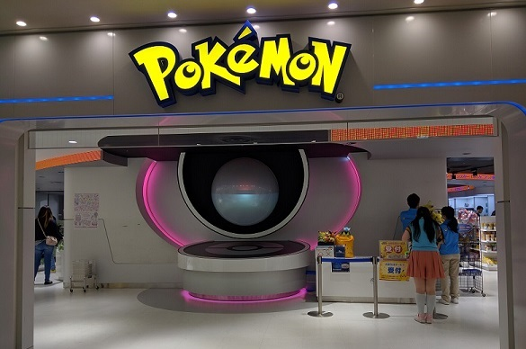
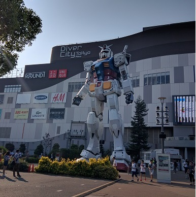
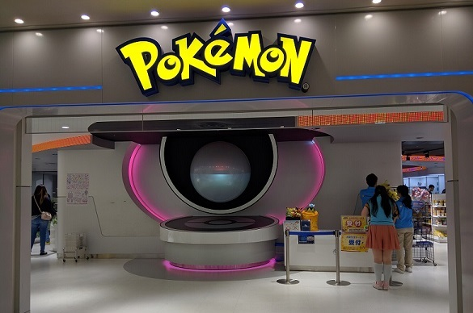
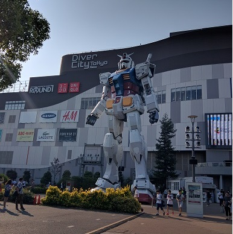

Herzlich Willkommen
Portfolio
🖤 Tokyo - Besuch 2016 🖤
Ich hatte immer den Traum nach Japan zu fliegen und im Mai 2016 war es dann endlich soweit. Wir flogen von München direkt nach Tokyo und obwohl es mein erster Flug überhaupt war, war die vorfreude auf Japan größer als irgendwelche Flugängste. Dort angekommen war ich erstmal total überfordert. All die neuen Eindrücke waren einfach Wahnsinn. Im folgenden möchte ich paar Erlebnisse aus Japan mit euch Teilen. An jeder Ecke stehen Getränkeautomaten um seinen Durst zu stillen. Ich persönlich fand sie wirklich super. Man musste nicht wirklich selbst Getränke schleppen da man doch überall etwas zum trinken bekam.Der Besuch beim Pokemoncenter und bei der rießen Gundum Statue war als Anime Fan natürlich Pflicht.
 



Folgend noch ein paar Kulturelle Bilder:
Wer den Anime Elfen Lied kennt, wird warscheinlich beim nächsten Bild die Kulisse erkennen. Kamakura diente als Grundlage für die Stadt
Und zu guter Letzt ein Bild aus Akihabara
Es gibt natürlich viel viel mehr Bilder aber das würde den Rahmen sprengen ;)
🖤 Musikvideodreh - Bausa & Zuna 🖤
September 2019 hatte ich die Chance beim Musikvideodreh von Zuna und Bausa für das Lied Biturbo zu helfen. Ich half bei den Rauchbomben sowie beim Drifter Mx5 mit Reifen etc. Es war ein einzigartiges Erlebnis. Zwei Videos zu den Filmarbeiten:
Und noch ein Bild mit mir und Zuna & Bausa
Hier gibt es das entstandende Video ZUNA ft. BAUSA - BITURBO prod. by MIKSU & MACLOUD (Official Video) zu sehen.